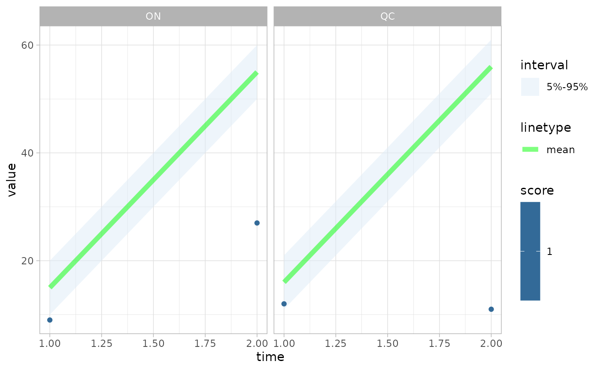
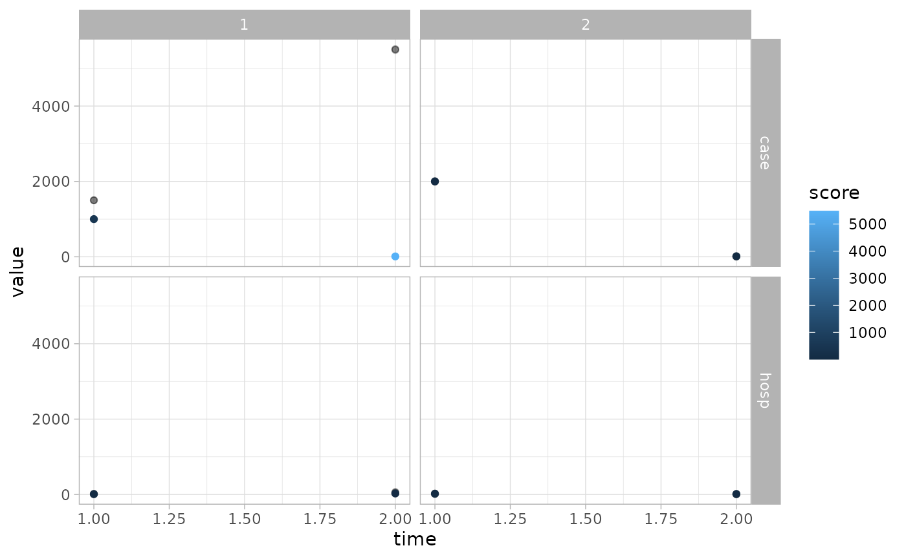

The Getting started vignette should be read before this one. Here we explain all the grouping functionality supported by casteval.
Group columns
On top of the time, sim, val,
val_mean, etc. columns that can be in forecast data frames,
a forecast data frame can contain as many grouping columns as you like.
A grouping column starts with grp_ followed by a nonempty
string, for example grp_variable,
grp_scenario, grp_province. These columns can
be used to group your forecast data.
# data frame with 3 group columns, each taking on 2 values
# see ?groups1 for details
groups1
#> # A tibble: 16 × 7
#> time grp_variable grp_province grp_scenario val_q5 val_q95 val_mean
#> <dbl> <chr> <chr> <dbl> <dbl> <dbl> <dbl>
#> 1 1 hosp ON 1 10 20 15
#> 2 1 case ON 1 1000 2000 1500
#> 3 1 hosp QC 1 11 21 16
#> 4 1 case QC 1 1100 2100 1600
#> 5 1 hosp ON 2 15 25 20
#> 6 1 case ON 2 1500 2500 2000
#> 7 1 hosp QC 2 16 26 21
#> 8 1 case QC 2 1600 2600 2100
#> 9 2 hosp ON 1 50 60 55
#> 10 2 case ON 1 5000 6000 5500
#> 11 2 hosp QC 1 51 61 56
#> 12 2 case QC 1 5100 6100 5600
#> 13 2 hosp ON 2 55 65 60
#> 14 2 case ON 2 5500 6500 6000
#> 15 2 hosp QC 2 56 66 61
#> 16 2 case QC 2 5600 6600 6100
# a similar data frame but with raw data
groups2
#> # A tibble: 32 × 5
#> time grp_variable grp_province grp_scenario val
#> <dbl> <chr> <chr> <dbl> <dbl>
#> 1 1 hosp ON 1 15
#> 2 1 hosp ON 1 15
#> 3 1 case ON 1 1499
#> 4 1 case ON 1 1501
#> 5 1 hosp QC 1 14
#> 6 1 hosp QC 1 18
#> 7 1 case QC 1 1597
#> 8 1 case QC 1 1603
#> 9 1 hosp ON 2 16
#> 10 1 hosp ON 2 24
#> # ℹ 22 more rowsSimilarly, observations data frames can also contain group columns.
# an observations data frame with the same grouping columns as above
groups_obs
#> # A tibble: 16 × 5
#> time grp_variable grp_province grp_scenario val_obs
#> <dbl> <chr> <chr> <dbl> <dbl>
#> 1 1 hosp ON 1 9
#> 2 1 case ON 1 1000
#> 3 1 hosp QC 1 12
#> 4 1 case QC 1 1599
#> 5 1 hosp ON 2 20
#> 6 1 case ON 2 2001
#> 7 1 hosp QC 2 24
#> 8 1 case QC 2 2500
#> 9 2 hosp ON 1 27
#> 10 2 case ON 1 10
#> 11 2 hosp QC 1 11
#> 12 2 case QC 1 12
#> 13 2 hosp ON 2 13
#> 14 2 case ON 2 14
#> 15 2 hosp QC 2 15
#> 16 2 case QC 2 16Scoring
Scoring functions behave a little differently when given grouped data. For a forecast and observations to be compatible for scoring, they must have the exact same group columns.1
If summarize=TRUE, then the result will be a data frame
with the usual val_obs and score columns, as
well as the group columns present in the forecast/observations.
fc1 <- create_forecast(groups1)
fc2 <- create_forecast(groups2)
bias(fc2, groups_obs)
#> # A tibble: 8 × 4
#> grp_variable grp_province grp_scenario score
#> <chr> <chr> <dbl> <dbl>
#> 1 case ON 1 1
#> 2 case ON 2 -0.5
#> 3 case QC 1 -0.5
#> 4 case QC 2 -1
#> 5 hosp ON 1 1
#> 6 hosp ON 2 -0.5
#> 7 hosp QC 1 0
#> 8 hosp QC 2 -0.5
accuracy(fc1, groups_obs)
#> Scoring accuracy using quantile pairs c(5, 95)
#> # A tibble: 8 × 6
#> pair grp_variable grp_province grp_scenario n score
#> <int> <chr> <chr> <dbl> <int> <dbl>
#> 1 1 case ON 1 2 0.5
#> 2 1 case ON 2 2 0.5
#> 3 1 case QC 1 2 0.5
#> 4 1 case QC 2 2 0.5
#> 5 1 hosp ON 1 2 0
#> 6 1 hosp ON 2 2 0.5
#> 7 1 hosp QC 1 2 0.5
#> 8 1 hosp QC 2 2 0.5
# accuracy still works with multiple quantile pairs
accuracy(fc2, groups_obs, quant_pairs=list(c(5,95), c(25,75)))
#> Scoring accuracy using quantile pairs c(5, 95), c(25, 75)
#> # A tibble: 16 × 6
#> pair grp_variable grp_province grp_scenario n score
#> <int> <chr> <chr> <dbl> <int> <dbl>
#> 1 1 case ON 1 2 0
#> 2 1 case ON 2 2 0.5
#> 3 1 case QC 1 2 0.5
#> 4 1 case QC 2 2 0
#> 5 1 hosp ON 1 2 0
#> 6 1 hosp ON 2 2 0.5
#> 7 1 hosp QC 1 2 0
#> 8 1 hosp QC 2 2 0.5
#> 9 2 case ON 1 2 0
#> 10 2 case ON 2 2 0.5
#> 11 2 case QC 1 2 0.5
#> 12 2 case QC 2 2 0
#> 13 2 hosp ON 1 2 0
#> 14 2 hosp ON 2 2 0.5
#> 15 2 hosp QC 1 2 0
#> 16 2 hosp QC 2 2 0.5
crps(fc2, groups_obs, at=2)
#> # A tibble: 8 × 4
#> grp_variable grp_province grp_scenario score
#> <chr> <chr> <dbl> <dbl>
#> 1 case ON 1 5485
#> 2 case ON 2 6.25
#> 3 case QC 1 8.25
#> 4 case QC 2 4.25
#> 5 hosp ON 1 23.5
#> 6 hosp ON 2 7.25
#> 7 hosp QC 1 9.25
#> 8 hosp QC 2 5.25If summarize=FALSE, the output will be like a regular
unsummarized data frame plus the group columns.
bias(fc2, groups_obs, summarize=FALSE)
#> # A tibble: 16 × 6
#> grp_variable grp_province grp_scenario time val_obs score
#> <chr> <chr> <dbl> <dbl> <dbl> <dbl>
#> 1 case ON 1 1 1000 1
#> 2 case ON 1 2 10 1
#> 3 case ON 2 1 2001 0
#> 4 case ON 2 2 14 -1
#> 5 case QC 1 1 1599 0
#> 6 case QC 1 2 12 -1
#> 7 case QC 2 1 2500 -1
#> 8 case QC 2 2 16 -1
#> 9 hosp ON 1 1 9 1
#> 10 hosp ON 1 2 27 1
#> 11 hosp ON 2 1 20 0
#> 12 hosp ON 2 2 13 -1
#> 13 hosp QC 1 1 12 1
#> 14 hosp QC 1 2 11 -1
#> 15 hosp QC 2 1 24 0
#> 16 hosp QC 2 2 15 -1
crps(fc2, groups_obs, summarize=FALSE)
#> # A tibble: 16 × 6
#> time grp_variable grp_province grp_scenario score val_obs
#> <dbl> <chr> <chr> <dbl> <dbl> <dbl>
#> 1 1 case ON 1 500. 1000
#> 2 1 case ON 2 2.5 2001
#> 3 1 case QC 1 1.5 1599
#> 4 1 case QC 2 396 2500
#> 5 1 hosp ON 1 6 9
#> 6 1 hosp ON 2 2 20
#> 7 1 hosp QC 1 3 12
#> 8 1 hosp QC 2 3 24
#> 9 2 case ON 1 5485 10
#> 10 2 case ON 2 6.25 14
#> 11 2 case QC 1 8.25 12
#> 12 2 case QC 2 4.25 16
#> 13 2 hosp ON 1 23.5 27
#> 14 2 hosp ON 2 7.25 13
#> 15 2 hosp QC 1 9.25 11
#> 16 2 hosp QC 2 5.25 15
accuracy(fc2, groups_obs, quant_pairs=list(c(5,95), c(25,75)), summarize=FALSE)
#> Scoring accuracy using quantile pairs c(5, 95), c(25, 75)
#> # A tibble: 32 × 7
#> time grp_variable grp_province grp_scenario val_obs score pair
#> <dbl> <chr> <chr> <dbl> <dbl> <lgl> <int>
#> 1 1 hosp ON 1 9 FALSE 1
#> 2 1 case ON 1 1000 FALSE 1
#> 3 1 hosp QC 1 12 FALSE 1
#> 4 1 case QC 1 1599 TRUE 1
#> 5 1 hosp ON 2 20 TRUE 1
#> 6 1 case ON 2 2001 TRUE 1
#> 7 1 hosp QC 2 24 TRUE 1
#> 8 1 case QC 2 2500 FALSE 1
#> 9 2 hosp ON 1 27 FALSE 1
#> 10 2 case ON 1 10 FALSE 1
#> # ℹ 22 more rowsThese unsummarized data frames remain compatible with plotting functions, as explained below.
Plotting
Every plotting function2 supports grouping of its inputs (forecasts and observations). However, there are some caveats.
Up to two grouping columns in the input to a plotting function may
take on multiple values. For example,
groups1 |> dplyr::filter(grp_scenario==1) is a valid
plotting input, but groups1 is not, since it has 3 groups
which take on multiple values.
Therefore at the moment, if you want to plot forecasts/observations
with more than 3 groups, you will probably have to use
dplyr::filter() and iteration in order to generate multiple
plots.3
If 1 group column takes on multiple values, then
ggplot2::facet_wrap() will be used.
fc <- create_forecast(groups1 |> dplyr::filter(grp_scenario==1, grp_variable=="hosp"))
obs <- groups_obs |> dplyr::filter(grp_scenario==1, grp_variable=="hosp")
plot_forecast(fc, obs, score=bias)
If 2 group columns take on multiple values, then
ggplot2::facet_grid() will be used.
fc <- create_forecast(groups2 |> dplyr::filter(grp_province=="ON"))
obs <- groups_obs |> dplyr::filter(grp_province=="ON")
plot_forecast(fc, obs, score=crps)